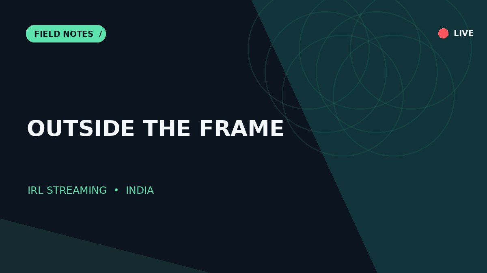
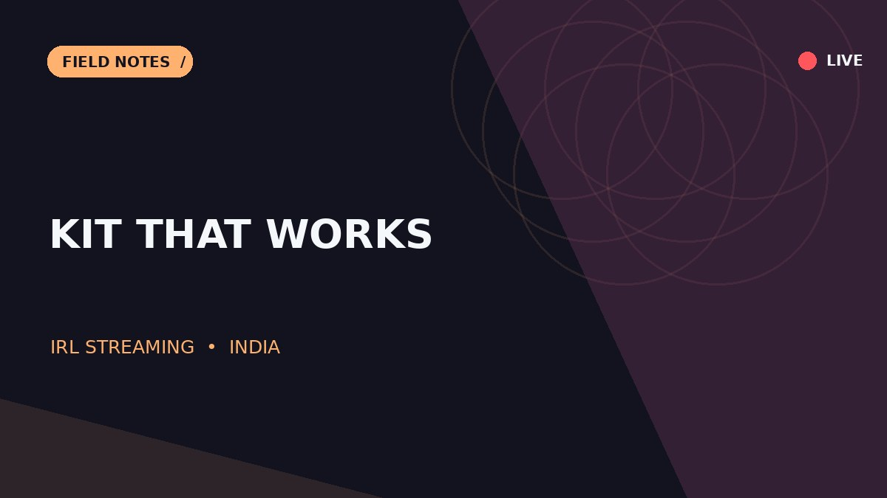
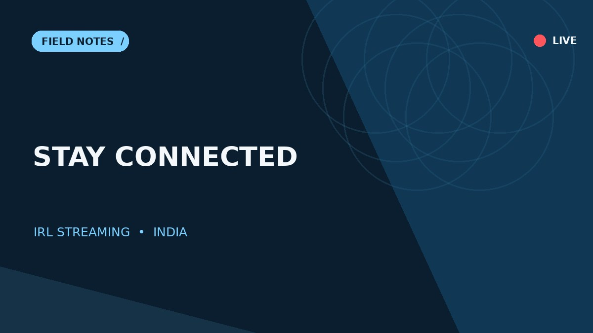
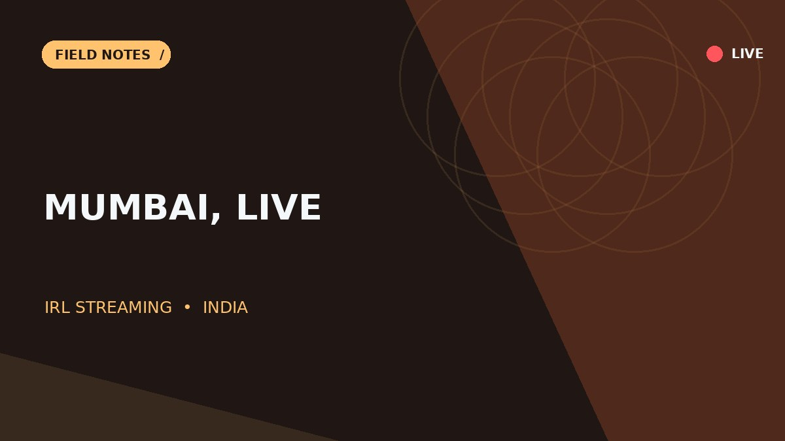
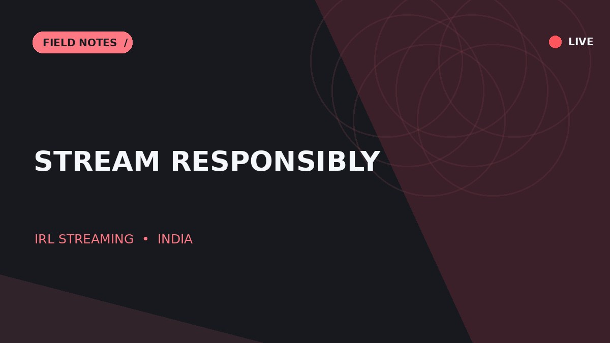
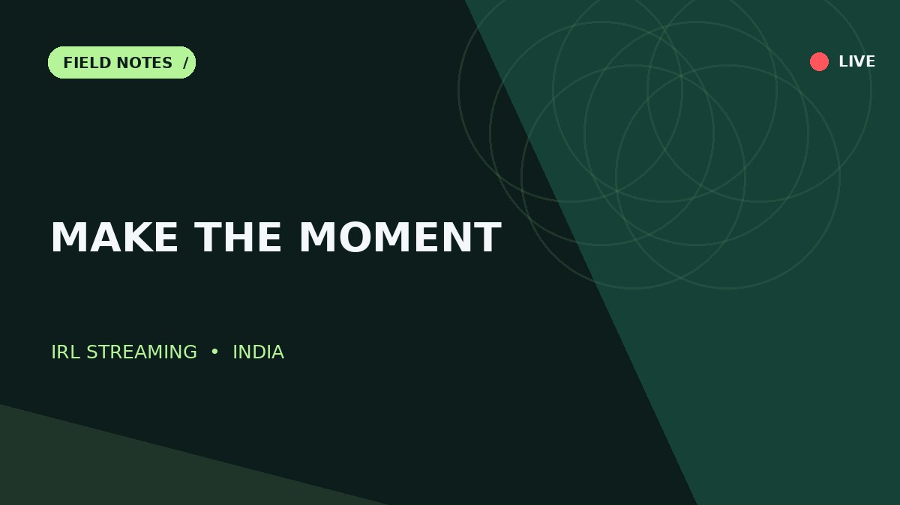
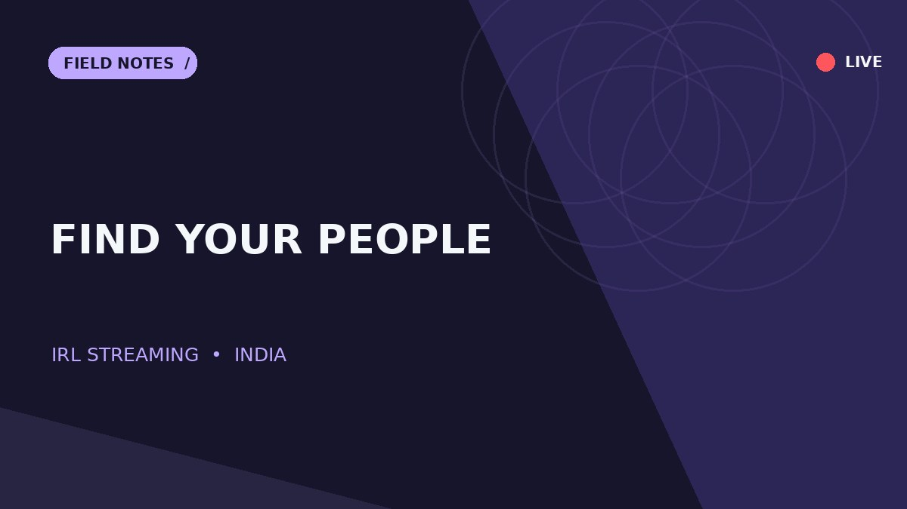
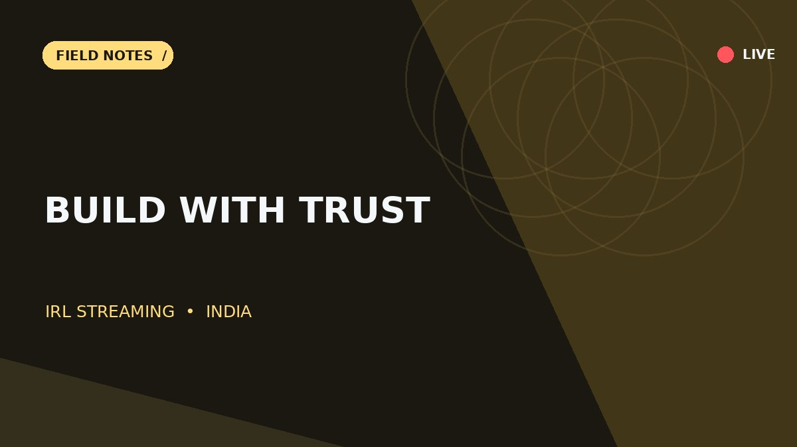
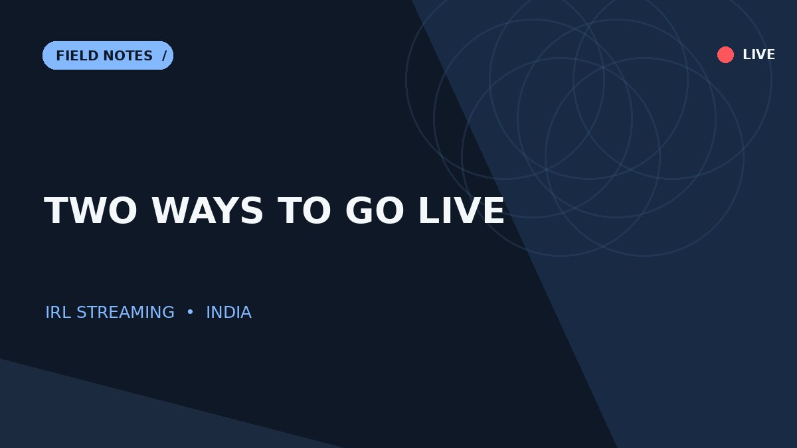
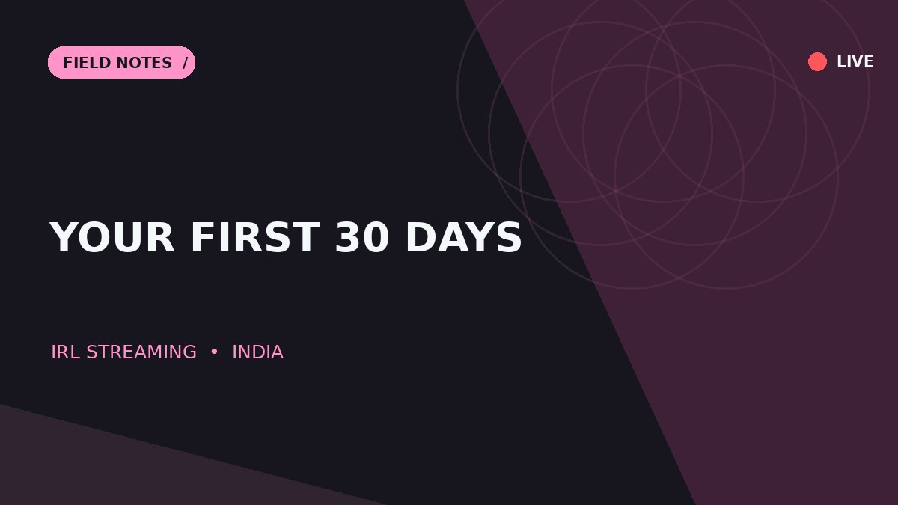

START HERE
IRL Streaming in India: The Beginner’s Guide
A practical introduction to IRL streaming in India: what it is, how to start, gear, connectivity, safety, and ways to build an audience.
7 min readRead guide ↗
A practical journal for IRL streaming in India — from your first phone stream to safer city walks, better connectivity, and a community that comes back.
Ideas, gear, and habits for going live with purpose.

A practical introduction to IRL streaming in India: what it is, how to start, gear, connectivity, safety, and ways to build an audience.

Build a sensible IRL streaming kit in India, prioritising phone stability, clean audio, battery life, and dependable connectivity before expensive upgrades.

Learn how to test mobile upload speed, choose stream settings, handle dead zones, and plan reliable connectivity for IRL streaming across India.

Plan a more engaging and responsible Mumbai IRL stream with a route, story beats, crowd awareness, transport considerations, and a backup plan.

A practical safety guide for IRL creators covering consent, location privacy, personal security, bystanders, harassment, and live moderation.

Use simple story beats, audience participation, pacing, and recurring segments to make spontaneous IRL streams engaging without scripting every moment.

A sustainable audience-growth plan for Indian IRL streamers using clear positioning, consistent formats, clips, community habits, and honest analytics.

Explore realistic IRL streaming monetisation paths, from platform features and memberships to brand partnerships, while protecting audience trust.

Compare IRL and gaming streaming by equipment, production demands, content style, safety, audience interaction, and how to choose your starting format.

A realistic 30-day launch roadmap for IRL streaming: define a format, test your setup, publish consistently, review results, and improve safely.